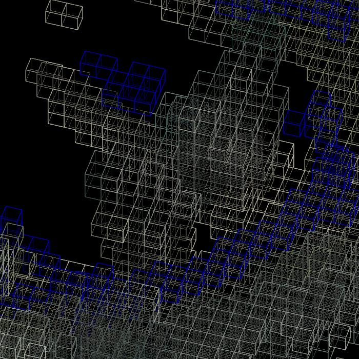

summerschool: Sense Adapt Create
Ghent, Belgium - September 5 -15, 2022
Download the additional summerschool brief here
fig 1.playground alteration#1 . Joris Putteneers. 2022. sketchfab model
Introduction
This summerschool is an exploration on Environmental Sensing, Data Driven
Design, Mapping and Visualization
In response to an increasingly connected and complex world, STEAM(Science,Technology, Engineering, Arts and Mathematics) practices have gained importance in education. While in Belgium as well as in several other European countries, the concept is mainly embedded in secondary education, the approach is becoming more common in higher education. In order to preparing students for tackling increasingly complex societal and environmental challenges and needs, we need to go beyond single-disciplinary learning approaches. This summer school provides a unique learning environment welcoming students from architecture, arts and engineering to collaborate and learn from other approaches. We will focus on process of making, which is central to each of these disciplines. Based on the STEAM learning principle, the aim is to broaden students' skills and perspective on their environment, their professional field and, by extension, the world. Starting from a common problem, a diversified view will be offered, and an innovative answer will be provided through co-creation.
sense
“How to articulate the invisible” is a problem that is present in various disciplines (raging from medical sciences towards urban design). It concerns that which exists in our environments, what we as human beings often can feel, but what cannot be perceived visually. Consequently, which cannot be seen is difficult to understand or respond to. The challenge, therefore, is to render what is present, yet invisible, tangible. Alongside the increasing understanding of the complexity of the world through the emergence and development of technologies and new ways of seeing, comes the recognition that several issues and problems can rarely be solved in narrowly defined disciplinary boundaries. From this observation, there is a certain urgency to develop ways of looking across disciplines as a way of communicating. Following on that, digital technologies such as sensing, satellite imagery, and earth observation are essential in mapping and understanding our changing environments and potentially mitigating the worst impact.
>>> The summer school will introduce students into working with sensors, hacking and adapting technologies, assembling and deploying them to map and visualize environmental parameters.
fig 2.playground pointcloud alteration with NERF. Joris Putteneers. 2022
adapt
In order to make sense of the messy entangled environment outlined above, we need to adapt disciplinary habits and practices. The summer school is part of the Creative Makers project, an interdisciplinary collaboration between Faculty of Architecture, LUCA School of Arts and the Faculty of Engineering Technology, that aims to enhance different practices of making through XR technologies. The summer school is the first in a series of pilot projects, it is an experiment in interdisciplinary collaboration. We will combine the critical questioning and divergent thinking of artistic practice, the spatial intelligence and environmental sensibilities of architecture, and the technical expertise and problem solving of engineering technology.
>>> We will work in interdisciplinary teams, combining engineering, architecture and arts students, you will learn skills in collaborating with others.

fig 3.playground segmantation. Joris Putteneers. 2022
create
As “creating and making” plays a central in architecture, engineering and arts: whether it is practice of drawing, painting, sculpting, modelling, coding, prototyping, visualizing… creative work progresses through the iterative process making. The summer school invites students and practitioners form all creative disciplines to join, bringing with them their own skills and expertise. The summer school will introduce students into working with advanced technologies such as sensors, data visualization and dramatization and animation, we will use them to create a narrative in the format of an animation or video. We will provide a framework and workflow that allow students with different degrees in technological, spatial and artistic knowhow to learn and contribute to the project.
>>> We will produce a narrative that reveals hidden layers of our environment and highlights how technology allows us to sense our environments differently.

fig 4.playground process selfie. Joris Putteneers. 2022
outcome
The learning outcomes will differ depending on the discipline the student stems from. The general aim is to broaden the discipline-bound view by learning new skills and techniques. For example, students of architecture and the arts are more likely to acquire knowledge about how they can use technology to read their environment and thereby acquire knowledge for future design processes. While engineering students are more likely to gain knowledge related to creative thinking and acting.

fig 5.playground alteration with object detection. Joris Putteneers. 2022
Overall, the students will learn to collaborate with other disciplines and learn some specific skills as well, such as:
- INPUT: working with sensors and various technologies to scan our environments
- PROCESS: working with data, integrate it within creative processes
- OUTPUT: introduction to time-based media and animation and create a narrative
Deadline for application: June 14th 2022
Interested candidates should send their CV, a motivation letter (maximum 300 words in English), including a link to a portfolio (if relevant) to: summerschool@creativemakers.xyz summerschool@creativemakers.xyz
Confirmation of acceptance: June 27th 2022
preparations
-
wifi visualisation
A first look at a wifi visualisation module of of our upcoming summerschool.
The idea is to create workfow modules that inherit certain characteristics from object oriented programming such as the ability of modules to
inherit
from itself or from other modules, to
polymorph
and to
abstract .

fig 5.wifi SSID workspace voxel visualisation mapped in viridis colorscpace. Joris Putteneers & Gilles Callebaut. 2022. sketchfab model
fig 5.VR Path visualisation mapped in viridis colorscpace. Joris Putteneers & Gilles Callebaut. 2022.
Project files can be downloaded here and here. Or through the creatieveMakers GitHub page
-
octree voxelmeshing
Octree voxel meshing of an unordered pointcloud.

fig 3.basic point cloud voxel instancing with variable distance treshold. Joris Putteneers. 2022


fig 3.pointcoud octree meshing -front -top -isometric. Joris Putteneers. 2022
Project files can be downloaded here.
-
RealityCapture camera path reconstruction
-
equirectangular pointcloud rendering with OpenGL
OpenGL does not natively support panoramic rendering. Since this summerschool heavely uses 360° media, an implementation was needed.

fig 1.pointcloud renderer with openGL. fov: 315° . Joris Putteneers. 2022

fig 2.pointcloud renderer with openGL. fov: 180° . Joris Putteneers. 2022

fig 3.With some tweaking, a panoramic view of screenspace attributes is also possible. fov: 180° . Joris Putteneers. 2022
Project files can be downloaded here.
studentwork
NaN